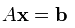

| Simultaneous Equation/System Equation |
|
This may be one of the most typical application of Matrix. You may still remember from high school math on how to solve a simultaneous equation. If the number of unknown variable is only 2 or 3 as you saw in the high school math class, it would be easier to solve it in the way you learned in the high school math class. But unfortunately most of real life problem is much more complicated than that. The number of unknown variables would be much more than 2 or 3 and in some cases they may amount to several dozens. In such a case, representing the problem in a matrix format and solve the problem with the technique you would learn in Linear Algebra class would be the best solution.
I don't want to turn this page into a Linear Algebra test book. The purpose of this section is just to show an example of the case for matrix representation.
A set of simultaneous equation with n unknown variable can be represented as follows.
Once you get this kind of simultaneous equation, you can extract coefficient parts, unknown variable and constants parts and can construct a Matrix and two vectors as follows. This is what you already learned from your Linear Algebra course.
Once you got a coefficient matrix and variable vectors, you can represent your original simultaneous equation as follows.

Now a question comes out. Why we need to do this ? After we finish a high school math, all of us would know how to find solutions for a simultaneous equations (I hope you are also a part of this group -:). As far as I remember, I start learning about Simultaneous equation from Junior High and early Senior High. and the learns about using the Matrix to solve a simultaneous equation in the second year in Senior High. At that time, using Matrix for this didn't seem easy to me. Especially finding the solution for the matrix equation using what we called 'Gaussian Elemenation Method' was so complicated to me. And I (also a lot of my friends) said "Why do we have to do this kind of akward things ?". I think the answer to this question is very simple. The common method you learned to solve a simultaneous equation in lower grade of High school would be a good method to find the solution to the simultaneous equation with 2 or 3 variables. Just try to use the same method to solve a simultaneous equation with 10 variables. Then you would realize right away that the method would not be a practical method and you would need something new way to solve it. In addition, most of the real life problem would have much more variables than 10. Some times a single problem would get involved with several hundred variables. In this case, you would realize that Matrix representation is more practical method. A better news is that you only have to convert your problem (a simultaneous equation in this case) into a matrix equation and you don't have to worry about finding solution for it. There are a lot of computer program (e.g, Matlab, Octave, Mathematica and even Microsoft Excel) can find the solution from the Matrix equation. In short, Converting a real life problem into a Matrix format is your job and doing mathemtical operation for solution finding is not your job. It's computer's job.
|